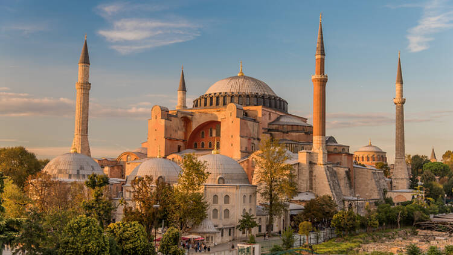
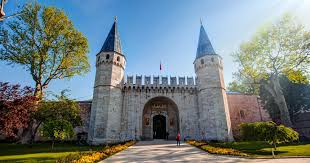
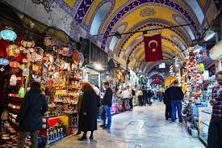

La Turquie, carrefour entre l'Europe et l'Asie, offre une richesse culturelle, historique et naturelle captivante. Avec son mélange fascinant d'influences orientales et occidentales, ce pays regorge de trésors à découvrir. Et au cœur de cette diversité se trouve Istanbul, la métropole majestueuse qui incarne à elle seule des siècles d'histoire et de splendeur. Istanbul séduit par ses monuments emblématiques comme la célèbre Sainte-Sophie, témoignage de l'ancienne grandeur byzantine, ou la Mosquée Bleue, symbole de l'architecture ottomane. Ses bazars animés, ses délices culinaires et son ambiance cosmopolite ajoutent à son charme irrésistible. Sans oublier le détroit du Bosphore, qui relie l'Europe à l'Asie et offre des panoramas époustouflants, ainsi qu'une croisière mémorable. En somme, Istanbul est une destination incontournable, où chaque coin de rue révèle une nouvelle facette de son riche héritage et de sa vibrante modernité.
Lieux populaires à visiter à Istanbul
L'Istanbul est connue pour ses attractions culturelles. Voici quelques-uns des lieux les plus populaires à visiter :
- Sainte-Sophie(Hagia Sophia): Cette structure emblématique était autrefois une église, puis une mosquée, et maintenant un musée. Il s'agit d'une merveille de l'architecture byzantine avec son dôme impressionnant et ses mosaïques complexes. Les visiteurs peuvent admirer l'art chrétien et islamique qui orne les murs et les plafonds, et en apprendre davantage sur l'histoire de ce bâtiment important.
- Palais de Topkapi: Ce palais opulent était la résidence des rois de l'Empire ottoman pendant des siècles. Il s'agit d'un complexe étendu de cours, de jardins et de pavillons qui mettent en valeur la richesse et le pouvoir des Ottomans. Les visiteurs peuvent voir le trésor, qui abrite les bijoux impériaux, ainsi que le harem, où vivaient les femmes et les concubines du sultan.
- Mosquée bleue : Cette magnifique mosquée tire son nom des carreaux bleus qui ornent son intérieur. Il s'agit de l'un des monuments les plus célèbres d'Istanbul et est encore un lieu de culte actif. Les visiteurs peuvent admirer le travail complexe des carreaux, les belles fenêtres teintées et l'atmosphère paisible.
- Grand Bazar (Kapalı Çarşı) : Une véritable célébration du commerce et de la culture, le Grand Bazar est l'un des marchés couverts les plus anciens et les plus vastes au monde. Avec ses milliers de boutiques proposant des tapis, des bijoux, des textiles, des épices et bien plus encore, il offre une expérience sensorielle inoubliable. Se perdre dans ses dédales de ruelles colorées est une aventure en soi, offrant aux visiteurs un aperçu fascinant de la vie quotidienne et du commerce traditionnel d'Istanbul.
- Croisière sur le Bosphore : Pour une perspective unique sur la ville, rien ne vaut une croisière relaxante le long du détroit du Bosphore. Naviguer entre l'Europe et l'Asie offre une vue panoramique sur les célèbres monuments d'Istanbul, tels que le palais de Dolmabahçe, la tour de Galata et les anciens forts ottomans. Les voyageurs peuvent également apprécier le contraste saisissant entre les rives animées de la ville et les paisibles quartiers résidentiels qui bordent le détroit, offrant ainsi une perspective complète de la vie stambouliote.



